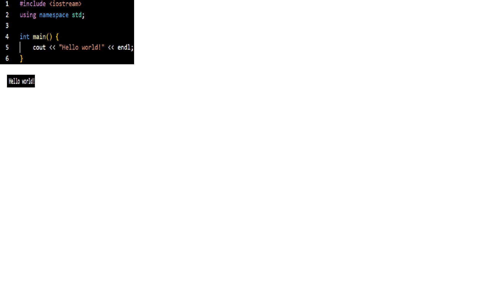

basic layout

code breakdown
- Line 1: call library
- calls the iostream library, which helps with input and output commands in C++
- Line 2: call std namespace
- Calling the std namespace helps remove the need of calling std container for each object, class, or function
- Lines 4-6: main function
- This is the basic default function to call when wanting to execute any code in C++.
int = return datatype
main = main function for executing code, only one main function is allowed per code
parenthesis: Area to enter parameters, this can be left blank when no parameters are required
curly brackets: This indicates the start and end of the function
- cout = outputs message
- << This is an indication for output
- endl = end of line